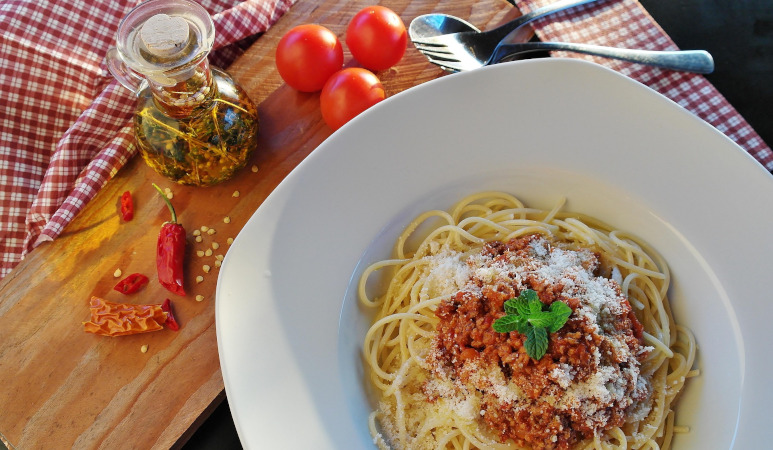

Spaghetti Bolognese
one of the italian classics

A simple italian dish that almost everyone knows! Easy to cook, and tasty as well!
Are your tastebuds ready?
Ingredients (one serving)
- 1/4 onion
- 1/4 clove garlic
- 125g ground beef
- 50 ml vegetable broth
- 17.5g tomato paste
- 1/4 Tbsp oregano
- 100g chunky tomatoes
- 1/2 Tbsp ketchup
- 125g Spaghetti
Steps
- First cut onion, garlic and Carrot into fine cubes
- Add the ground beef to the pan, heat slowly and sauté in its own fat. Add salt and pepper.
- Then add the cut onions, garlic and carrots and sautè briefly. Deglaze with the broth
- Add the tomato paste, oregano and chunky tomatoes and mix well. Let it cook for 40 minutes.
- Cook the spaghetti in saltwater until done. Serve with the sauce. And you're done!
Return to Homepage